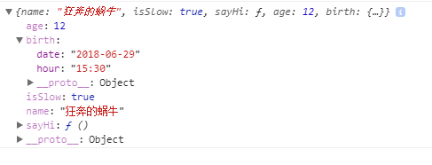
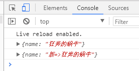
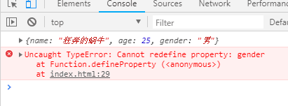
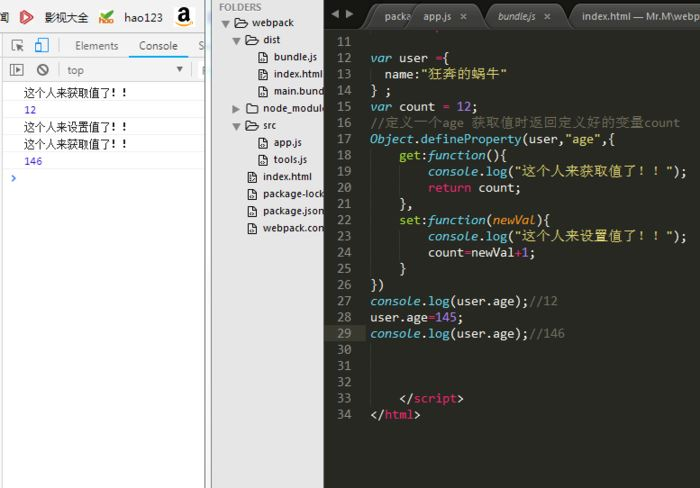

# Object.defineProperty()详解
在园子里看到一篇讲解Object.defineProperty()的非常好的博文，我把他转载过来，给自己留个笔记。原文出处https://www.cnblogs.com/junjun-001/p/11761252.html#commentform
菜菜： “老大，那个， Object.defineProperty 是什么鬼？”
假设我们有个对象 user ; 我们要给它增加一个属性 name , 我们会这么做
1 var user = {};
2 user.name="狂奔的蜗牛";
3 console.log(user);//{name: "狂奔的蜗牛"}
如果想要增加一个sayHi方法叻？
1 user.sayHi=function () { console.log("Hi !") };
2 console.log(user);//{name: "狂奔的蜗牛", sayHi: ƒn}
Object.defineProperty就是做这个的
** 那么Object.defineProperty 怎么用？**
Object.defineProperty 需要三个参数（object , propName , descriptor）
1 object 对象 => 给谁加 2 propName 属性名 => 要加的属性的名字 【类型：String】 3 descriptor 属性描述 => 加的这个属性有什么样的特性【类型：Object】
那么 descriptor这个是个对象 ，他有那些属性呢 ? 别着急我们一个一个说；
既然可以给一个对象增加属性，那么我们用它来做一下给 user添加 name属性，代码是这样的
1 var user = {};
2 Object.defineProperty(user,"name",{
3 value:"狂奔的蜗牛"
4 })
5 console.log(user);//{name: "狂奔的蜗牛"}
说明 是的还是那个经典的 value属性，他就是设置属性值的。
等等，属性值只能为字符串吗？我们的 number function Object boolean 等呢？

1 var user = {};
2 Object.defineProperty(user,"name",{
3 value:"狂奔的蜗牛"
4 })
5 Object.defineProperty(user,"isSlow",{
6 value:true
7 })
8 Object.defineProperty(user,"sayHi",{
9 value:function () { console.log("Hi !") }
10 })
11 Object.defineProperty(user,"age",{
12 value:12
13 })
14 Object.defineProperty(user,"birth",{
15 value:{
16 date:"2018-06-29",
17 hour:"15:30"
18 }
19 })
20 console.log(user);

说明 事实证明任何类型的数据都是可以的哦~
问题又来了，如果 user对象已经有了name属性，我们可以通过Object.defineProperty改变这个值吗？
我们来试试
1 var user = {};
2 Object.defineProperty(user,"name",{
3 value:"狂奔的蜗牛"
4 })
5 console.log(user);
6 user.name="新=>狂奔的蜗牛"
7 console.log(user);
咦？？为什么我改了没作用勒？？
原因：上边说了descriptor有很多属性，除了value属性还有个 writable【顾名思义属性是否可以被重新赋值】接受数据类型为 boolean（默认为false） true => 支持被重新赋值 false=>只读
哦哦，原来如果我没设置writable值的时候就默认只读啊，所以才改不掉
那我们看看，设置为true，是不是就可以改掉了。
1 var user = {};
2 Object.defineProperty(user,"name",{
3 value:"狂奔的蜗牛",
4 writable:true
5 })
6 console.log(user);
7 user.name="新=>狂奔的蜗牛"
8 console.log(user);

这个descriptor还有其他的属性吗？enumerable【顾名思义属性是否可以被枚举】接受数据类型为 boolean（默认为false） true => 支持被枚举 false=>不支持
额。。。枚举？？什....什么意思？
假设我们想知道这个 user对象有哪些属性我们一般会这么做
1 var user ={
2 name:"狂奔的蜗牛",
3 age:25
4 } ;
5
6 //es6
7 var keys=Object.keys(user)
8 console.log(keys);// ['name','age']
9 //es5
10 var keys=[];
11 for(key in user){
12 keys.push(key);
13 }
14 console.log(keys);// ['name','age']
如果我们使用 Object.的方式定义属性会发生什么呢？我们来看下输出
1 var user ={
2 name:"狂奔的蜗牛",
3 age:25
4 } ;
5 //定义一个性别 可以被枚举
6 Object.defineProperty(user,"gender",{
7 value:"男",
8 enumerable:true
9 })
10
11 //定义一个出生日期 不可以被枚举
12 Object.defineProperty(user,"birth",{
13 value:"1956-05-03",
14 enumerable:false
15 })
16
17 //es6
18 var keys=Object.keys(user)
19 console.log(keys);
20 // ["name", "age", "gender"]
21
22 console.log(user);
23 // {name: "狂奔的蜗牛", age: 25, gender: "男", birth: "1956-05-03"}
24 console.log(user.birth);
25 // 1956-05-03
说明 很明显，我们定义为 enumerable=false的 birth属性并没有被遍历出来，遍历 => 其实就是枚举（个人理解啦，不喜勿喷哦~）
** 总结 **enumerable属性取值为 布尔类型 true | false默认值为 false，为真属性可以被枚举；反之则不能。此设置不影响属性的调用和 查看对象的值。
configurable是接下来我们要讲的一个属性，这个属性有两个作用：
1 属性是否可以被删除 2 属性的特性在第一次设置之后可否被重新定义特性
1 var user ={
2 name:"狂奔的蜗牛",
3 age:25
4 } ;
5 //定义一个性别 不可以被删除和重新定义特性
6 Object.defineProperty(user,"gender",{
7 value:"男",
8 enumerable:true,
9 configurable:false
10 })
11
12 //删除一下
13 delete user.gender;
14 console.log(user);//{name: "狂奔的蜗牛", age: 25, gender: "男"}
15
16 //重新定义特性
17 Object.defineProperty(user,"gender",{
18 value:"男",
19 enumerable:true,
20 configurable:true
21 })
22 // Uncaught TypeError: Cannot redefine property: gender
23 //会报错，如下图

设置为 true
1 var user ={
2 name:"狂奔的蜗牛",
3 age:25
4 } ;
5 //定义一个性别 可以被删除和重新定义特性
6 Object.defineProperty(user,"gender",{
7 value:"男",
8 enumerable:true,
9 configurable:true
10 })
11
12 //删除前
13 console.log(user);
14 // {name: "狂奔的蜗牛", age: 25, gender: "男"}
15
16 //删除一下
17 delete user.gender;
18 console.log(user);
19 // {name: "狂奔的蜗牛", age: 25}
20
21 //重新定义特性
22 Object.defineProperty(user,"gender",{
23 value:"男",
24 enumerable:true,
25 configurable:false
26 })
27
28 //删除前
29 console.log(user);
30 // {name: "狂奔的蜗牛", age: 25, gender: "男"}
31 //删除一下 删除失败
32 delete user.gender;
33 console.log(user);
34 // {name: "狂奔的蜗牛", age: 25, gender: "男"}
总结 configurable设置为 true 则该属性可以被删除和重新定义特性；反之属性是不可以被删除和重新定义特性的，默认值为false（Ps.除了可以给新定义的属性设置特性，也可以给已有的属性设置特性哈）
最后我们来说说，最重要的两个属性 set和 get（即存取器描述：定义属性如何被存取），这两个属性是做什么用的呢？我们通过代码来看看
1 var user ={
2 name:"狂奔的蜗牛"
3 } ;
4 var count = 12;
5 //定义一个age 获取值时返回定义好的变量count
6 Object.defineProperty(user,"age",{
7 get:function(){
8 return count;
9 }
10 })
11 console.log(user.age);//12
12
13 //如果我每次获取的时候返回count+1呢
14 var user ={
15 name:"狂奔的蜗牛"
16 } ;
17 var count = 12;
18 //定义一个age 获取值时返回定义好的变量count
19 Object.defineProperty(user,"age",{
20 get:function(){
21 return count+1;
22 }
23 })
24 console.log(user.age);//13
接下来我不用解释了吧，你想在获取该属性的时候对值做什么随你咯~
来来来，我们看看 set，不多说上代码
1 var user ={
2 name:"狂奔的蜗牛"
3 } ;
4 var count = 12;
5 //定义一个age 获取值时返回定义好的变量count
6 Object.defineProperty(user,"age",{
7 get:function(){
8 return count;
9 },
10 set:function(newVal){
11 count=newVal;
12 }
13 })
14 console.log(user.age);//12
15 user.age=145;
16 console.log(user.age);//145
17 console.log(count);//145
18
19 //等等，如果我想设置的时候是 自动加1呢？我设置145 实际上设置是146
20
21 var user ={
22 name:"狂奔的蜗牛"
23 } ;
24 var count = 12;
25 //定义一个age 获取值时返回定义好的变量count
26 Object.defineProperty(user,"age",{
27 get:function(){
28 return count;
29 },
30 set:function(newVal){
31 count=newVal+1;
32 }
33 })
34 console.log(user.age);//12
35 user.age=145;
36 console.log(user.age);//146
37 console.log(count);//146
**说明 **注意：当使用了getter或setter方法，不允许使用writable和value这两个属性(如果使用，会直接报错滴)
get是获取值的时候的方法，类型为 function，获取值的时候会被调用，不设置时为 undefined
set是设置值的时候的方法，类型为 function，设置值的时候会被调用，undefined
get或set不是必须成对出现，任写其一就可以
1 var user ={
2 name:"狂奔的蜗牛"
3 } ;
4 var count = 12;
5 //定义一个age 获取值时返回定义好的变量count
6 Object.defineProperty(user,"age",{
7 get:function(){
8 console.log("这个人来获取值了！！");
9 return count;
10 },
11 set:function(newVal){
12 console.log("这个人来设置值了！！");
13 count=newVal+1;
14 }
15 })
16 console.log(user.age);//12
17 user.age=145;
18 console.log(user.age);//146

【完结】
Object.defineProperty方法直接在一个对象上定义一个新属性，或者修改一个已经存在的属性， 并返回这个对象
- value: 设置属性的值
- writable: 值是否可以重写。true | false
- enumerable: 目标属性是否可以被枚举。true | false
- configurable: 目标属性是否可以被删除或是否可以再次修改特性 true | false
- set: 目标属性设置值的方法
- get：目标属性获取值的方法
文章来源：https://www.cnblogs.com/ldq678/p/13854113.html